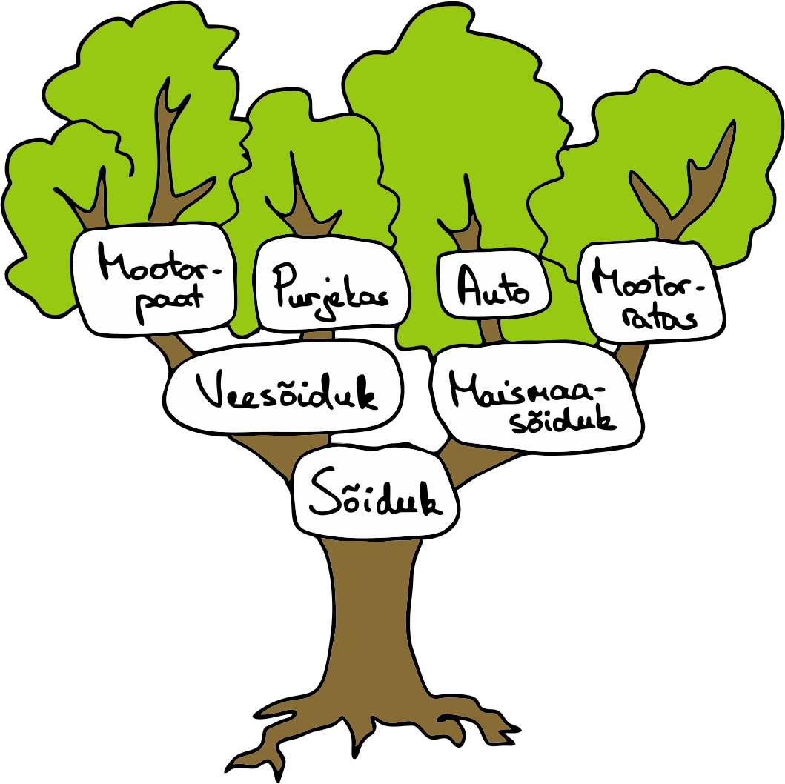
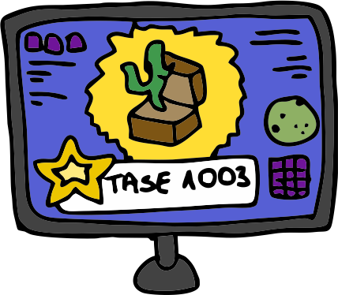

Me oskame juba klasse ja isendeid luua ning kasutada. Kuid mis saab olukorras, kus meil on vaja mitmeid erinevaid klasse,
mis on omavahel üsna sarnased, kuid mitte päris samad? Näiteks Õpilane ja Õpetaja. Mõlemal on nimi, isikukood, elukoht, sünniaasta jne, kuid
vaid õpilasel on klassinumber ja vaid õpetajal on õpetatav aine. Kas siis peamegi lihtsalt kaks klassi looma ja mõlemale need korduvad
isendiväljad lisama?
Nagu ilmselt aimata võid, siis tegelikult ei pea. Selles peatükis räägime täpsemalt, kuidas panna klasse üksteiselt omadusi pärima.
Ülem- ja alamklassid
Päriluse puhul on tegemist klassidevahelise omaduste pärimisega. Päritakse nii isendivälju
kui ka meetodeid. Kaks klassi ei saa üksteise omadusi pärida, aga üks neist saab olla ülemklass ehk klass, millelt omadusi päritakse,
ja teine klass on alamklass ehk klass, mis pärib. Tüüpiliselt ülemklass on üldisem ja sellel võib olla mitmeid
alamklasse, mis on täpsemad. Näiteks meil võib olla ülemklass Isik, millel on alamklassid Õpilane ja Õpetaja. Või siis klass Sõiduk,
millel on alamklassid Auto, Mootorratas ja Kaubik.
Klassil saab olla ainult üks ülemklass, aga sellel ülemklassil võib omakorda olla ülemklass ja
sellel jälle omakorda ülemklass. Nii saame moodustada terveid klasside ahelaid.

Vaatame, kuidas ülem- ja alamklasse koodis kirja panna. Ülemklass on tegelikult täiesti tavaline klass ja ei erine kuidagi nendest,
mida eelmises peatükis kirjutasime. Loome näiteks klassi Isik, millel on isendiväljad nimi,
sünniaasta ja elukoht. Lisame ka
näiteks meetodi tervita, mis väljastab ekraanile lihtsa tervituse.
Selles klassis on meil kõik omadused, mis on kõikidel isikutel, kaasaarvatud näiteks õpetajatel ja
õpilastel.
Nüüd loomegi klassile Isik kaks alamklassi – Õpetaja ja Õpilane.
Alamklass on väga sarnane tavalisele klassile, on ainult üks väike erinevus. Nimelt tuleb klassi nime järele lisada ka
sulud ja sulgudesse ülemklassi nimi. Näiteks klassi Õpilane algus näeks välja nii:
Kõik isendiväljad, mis olid ülemklassis, on ka alamklassis kättesaadavad ja need tuleb ka alamklassi isendit
luues väärtustada. Kui me ei taha alamklassi ühtegi isendivälja lisada, siis võime konstruktori ka kirjutamata jätta ja vaikimisi
kasutatakse alamklassi puhul konstruktorit, millel on samad argumendid nagu ülemklassil.
Jätame esialgu klassi Õpilane konstruktori lisamata. Lisame klassi hoopis ühe meetodi nimega mine_kooli, mis väljastab ekraanile, et õpilane käis täna koolis.
Proovime ka luua mõned isendid ja veendume, et meie klassid toimivad nii nagu peavad.
Ülemklassi poole pöördumine funktsiooniga super
Nüüd tahaksime klassile Õpilane lisada uue isendivälja klassinumbri jaoks. Seega tahame konstruktoris väärtustada nii ülemklassis
kirjeldatud väljad kui ka Õpilase enda isendivälja. Ülemklassi isendivälju saame väärtustada läbi ülemklassi konstruktori, aga kuidas selle poole
pöörduda?
Ülemklassi poole pöördumiseks on meil funktsioon super, mille abil
saame kasutada kõiki sealseid meetodeid, nende hulgas ka konstruktorit. Täiendame oma Õpilane klassi konstruktoriga, mis võtab
kõigepealt argumentideks kõik Isik klassi isendiväljade väärtused ja siis lisaks ka õpilase klassi numbri (mitmendas klassis ta õpib).
Proovime nüüd luua klassile Isik veel ühe alamklassi nimega Õpetaja. Õpetaja konstruktor peaks samuti väärtustama kõik
ülemklassi väljad, aga lisaks peaks selles klassis olema isendiväli õpetatava aine jaoks. Lisame ka ühe isendimeetodi
anna_tundi, mis võtab argumendiks klassi numbri, kellele tundi antakse.
Võime ka veenduda, et teise klassi omadustele ligipääs toimib ainult ühte pidi. Ülemklass ei tea midagi oma alamklasside
isendiväljade ega meetodite kohta.
Meetodite ülekatmine
Ülemklassis kirjeldatud meetodid on ka alamklassidel olemas. Näiteks meetodit tervita
saame ka klasside Õpilane ja Õpetaja isendite puhul kasutada, kuigi me pole seda nendes klassides kirja pannud.
Vahepeal võib aga juhtuda, et tahame, et alamklassis mõni ülemklassis kirjutatud meetod käituks natuke teistmoodi.
Sellisel juhul saame selle ülemklassi meetodi üle katta ehk kirjutada alamklassi täpselt sama nime ja argumentidega meetodi. Proovime näiteks
täiendada oma Õpetaja klassi meetodiga tervita.
Kui nüüd proovime täpselt samade isenditega uuesti tervitamise meetodit, siis näeme, et klassi Õpetaja isendil
on see asendunud uue ülekaetud meetodiga.
Harjutused
Arvutimängu mängijad
Arvutimängu mängijate andmete hoidmiseks on klass Mängija. Selles klassis on isendiväljad
kasutajanimi ja tase. Lisaks on klassis meetod
liigu_järgmisele_tasemele, mis tõstab kasutaja taset ühe võrra ja väljastab ta uue taseme.
Mängijad, kes jõuavad teatud tasemele, muutuvad supermängijateks. Supermängijad saavad oma tegelaste
välimust muuta ja iga tasemega teenivad ühe stiili juurde.
Supermängijate kujutamiseks on Mängijal alamklass Supermängija, millel on lisaks isendiväli saadud stiilide hulga
jaoks. Meetod liigu_järgmisele_tasemele on ülekaetud ja lisaks
taseme tõstmisele loositakse seal kasutajale uus stiil, mis lisatakse ta stiilide hulka. Uus tase, saadud stiil ja
kõik kasutaja stiilid
väljastatakse ekraanile.
Mängus saadaolevad stiilid on allolevas järjendis. Selle võib lihtsalt oma koodi
kopeerida.
Uue stiili loosimiseks on meil vaja teeki random, mida kasutasime ka
funktsioonide peatükis. Selles teegis on meetod choice, mille abil saame loosida
etteantud järjendist
ühe suvalise elemendi. Võib juhtuda, et loositakse selline stiil, mis oli mängijal juba olemas.
Sellisel juhul mängija lihtsalt uut stiili ei saa.

Edasiarendus: mäng
Loome lisaks mängijate klassidele ka klassi Mäng, millel on üks isendiväli – sõnastik kõigist mängijatest, kus kasutajanimi
on võti ja mängija isend on väärtus. Uut Mängu isendit luues pole ühtegi kasutajat lisatud. Klassis on kaks meetodit, esimene neist on
lisa_mängija, mis küsib kasutajalt uue mängija nime ja taseme. Kusjuures
kui kasutajanimi on juba olemas, siis uut sama nimega mängijat ei lubata lisada. Kui tase on üle 1000, siis luuakse uus Supermängija isend (alguses on saadud stiilide hulk tühi),
kui alla 1000, siis luuakse Mängija isend ja lisatakse mängu sõnastikku. Teiseks meetodiks on liiguta_järgmisele_tasemele,
mis küsib kasutajalt mängija kasutajanime, kes tuleks uuele tasemele liigutada, ja kutsub välja selle mängija meetodit
liigu_järgmisele_tasemele. Kui kasutaja sisestab kasutajanime, mida sõnastikus ei ole, siis väljastatakse
vastav teade.
Lihtsuse mõttes jätame siit praegu välja olukorra, kus mängija saab mängu keskel taseme 1000 ja peaks muutuma
supermängijaks. Kes tahab, võib aga proovida sellele olukorrale ka lahendus leida.
Põhiprogrammis luuakse uus Mängu isend ja hakatakse kasutajalt käsklusi küsima: "l" mängija lisamiseks ja
"j" järgmisele tasemele liigutamiseks. Kui kasutaja sisestab midagi muud, siis programm lõpetab oma töö.
Näide programmi väljundist:
Kas soovid mängijat lisada (l) või järgmisele tasemele liigutada (j)? l Sisesta kasutajanimi: keit Sisesta tase: 3 Kas soovid mängijat lisada (l) või järgmisele tasemele liigutada (j)? l Sisesta kasutajanimi: ossu12 Sisesta tase: 1100 Kas soovid mängijat lisada (l) või järgmisele tasemele liigutada (j)? l Sisesta kasutajanimi: keit Sellise nimega kasutaja on juba olemas. Ei saa lisada... Kas soovid mängijat lisada (l) või järgmisele tasemele liigutada (j)? j Sisesta kasutajanimi: keit keit liikus tasemele 4 Kas soovid mängijat lisada (l) või järgmisele tasemele liigutada (j)? j Sisesta kasutajanimi: karro Sellise nimega kasutajat pole. Ei saa järgmisele tasemele liigutada... Kas soovid mängijat lisada (l) või järgmisele tasemele liigutada (j)? j Sisesta kasutajanimi: ossu12 ossu12 liikus tasemele 1101 ossu12 sai uue stiili: draakon ossu12 kõik stiilid: {{'{'}}'draakon'{{'}'}} Kas soovid mängijat lisada (l) või järgmisele tasemele liigutada (j)? j Sisesta kasutajanimi: ossu12 ossu12 liikus tasemele 1102 ossu12 sai uue stiili: rebane ossu12 kõik stiilid: {{'{'}}'draakon', 'rebane'{{'}'}} Kas soovid mängijat lisada (l) või järgmisele tasemele liigutada (j)? kõik